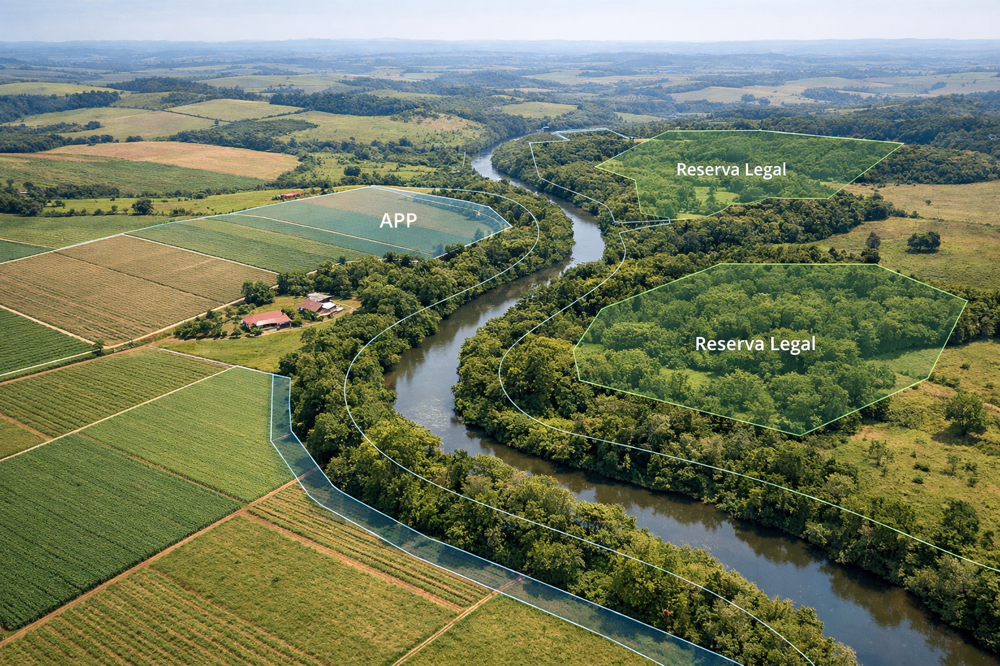

Atuação técnica especializada na adequação ambiental de imóveis rurais, com foco em segurança jurídica, conformidade legal e suporte técnico ao produtor.
Elaboração, análise e atualização do CAR.
Adequação de áreas de preservação permanente.
Delimitação e regularização conforme legislação.
Projetos de recuperação ambiental.